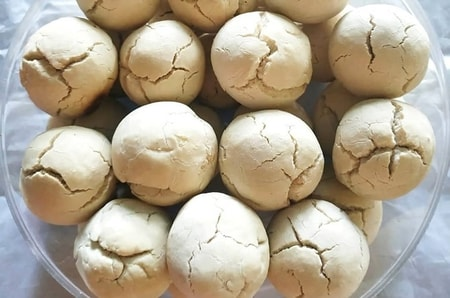

Daftar Isi
Bagea Sagu
Bagea adalah kue tradisional khas Maluku dan juga Papua. Bagea biasanya berbentuk bulat dan warnanya cokelat pucat. Bagea adalah salah satu olahan dari sagu. Biasanya Bagea disantap dengan teh atau kopi. Di Ternate, Bagea biasanya ditambahkan dengan biji kenari.
Cara Membuat
Bahan:
- 390 gram tepung sagu
- 95 gram kacang tanah
- 95 gram kacang kenari 200 gram gula halus
- 90 ml minyak sayur atau minyak goreng
- 2 butir telur ayam
- 1/4 sendok teh soda kue
- 1/2 sendok teh kayu manis bubuk
Cara membuat:
- Langkah pertama, sanrai biji kacang tanah dan haluskan, kemudian sisihkan terlebih dahulu.
- Dalam wadah yang lain, haluskan kacang kenari dan sisihkan terlebih dahulu.
- Ambil wadah lain, lalu masukkan telur ayam dan gula pasir, kocok dengan menggunakan mixer sampai tekstur campuran menjadi mengembang.
- Tambah sedikit demi sedikit tepung terigu, soda kue, minyak sayur dan bubuk kayu manis kedalam campuran gula dan telur, lalu aduk secara perlahan hingga tercampur merata.
- Masukkan kacang tnah dan kacang kenari kedalam adonan, kemudian aduk kembali adonan hinga tercampur dan bisa dibentuk
- Selanjutnya bentuk satu sendok adonan menjadi pipih, lanjutkan hingga adonan habis
- Tata adonan diatas loyang yang sudah diberi alas kertas roti dan diolesi dengan margarin
- Panaskan oven dnegan suhu sekitar 160 derajat dan masukkan loyang yang sudah berisi adonan kedalam oven, panggang hingga matang atau selama kurang lebih 30 menit
- Keluarkan loyang dari oven tunggu hingga kue dingin di suhu ruangan
- Kue kering bagea renyah dan gurih siap di hidangkan

Nama lain
Kue Bagea
Tempat Asal
Indonesia
Daerah
Maluku dan Papua
Bahan Utama
Tepung Sagu
Informasi lain
Biasa disajikan saat pagi atau sore hari